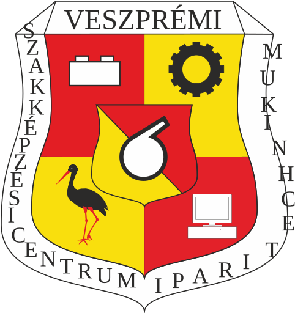

Épület betöltése…
Húzással körbenézhetsz · görgővel vagy két ujjal nagyíthatsz · Esc: vissza

Ez a térkép megmutatja, hogyan juthatsz el bármelyik teremhez az épületben.
Alapból a főbejárattól (porta) tervezünk; ha máshonnan indulsz, írd át a „Honnan” mezőt. Szintváltó a jobb oldalon: F = földszint, 1, 2, T = I‑szárny tetőtér.
Készítette: Lakatos Bence, 12/C